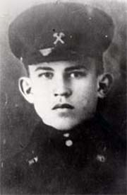

Григорьев Георгий Степанович — разведчик 94-й гвардейской отдельной разведывательной роты 91-й гвардейской стрелковой дивизии 39-й армии Западного фронта, гвардии сержант.
Родился в 1924 году в деревне Лошки ныне Можайского района Московской области в семье крестьянина. Русский. Окончил неполную среднюю школу. Был рабочим.
В Красной Армии с 1942 года. Участник Великой Отечественной войны с февраля 1942 года.
Разведчик 94-й гвардейской отдельной разведывательной роты (91-я гвардейская стрелковая дивизия, 39-я армия, Западный фронт) комсомолец гвардии сержант Георгий Григорьев отличился в боях при освобождении Белоруссии.
20 января 1944 года группа воинов, в которой был и Георгий Григорьев, находясь в разведке в районе деревни Волчки (южнее Витебска), уничтожила до 20-ти гитлеровцев и захватила двух «языков».
В критический момент боя, будучи уже тяжело ранен, отважный воин, собрав последние силы, бросился на вражеский пулемёт. Разведчики выполнили боевую задачу.
Первоначально был похоронен в братской могиле вблизи деревни Копти Лиозненского района Витебской области. Перезахоронен в братской могиле в деревне Шапуры Витебского района .
Указом Президиума Верховного Совета СССР от 3 июня 1944 года за образцовое выполнение боевых заданий командования на фронте борьбы с
немецкими захватчиками и проявленные при этом отвагу и геройство гвардии сержанту Григорьеву Георгию Степановичу посмертно присвоено звание Героя Советского Союза.
Награжден орденами Ленина, Отечественной войны 1-й степени, Красной Звезды.